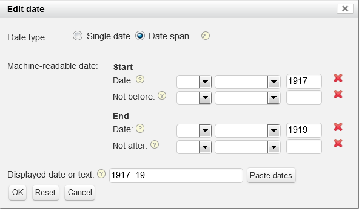

Entering dates
Since dates in MEI consist of a visible and a hidden (machine-readable) component, a special date editor is opened whenever you click a date field or the "Edit" button next to a date.

The visible part of the date is entered at the bottom. You may enter anything you would like to be displayed as the dating, e.g. "May 23", "1906-1918", "2012-09-19" or "No later than the composer's 41st anniversary".
The machine-readable part is entered using the day, month and year fields in the middle. You may either enter a single date or the end point(s) of a date span. Choose the appropriate setting at the top.
A year or a month may be entered as a single date by leaving the day or both the day and month fields empty.
Choose the "Date span" setting if you need to enter a date range, or if you know only one end point of a date span for the event. A couple of examples for illustration:


Only one date may be entered in each of the two parts "Start" and "End", respectively. Use "Date" if you know an exact date (or exact month, or year), or "Not before"/"Not after" if you know only the outer limits.
Click the "OK" button to keep your changes, or "Cancel" to close the date editor without changing the original date. When the date editor closes, the machine-readable part will be displayed on the main form in square brackets.